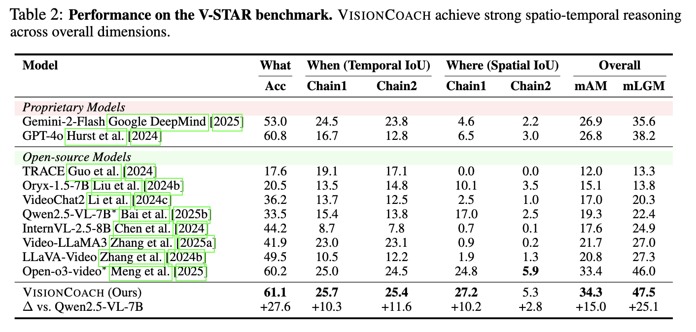
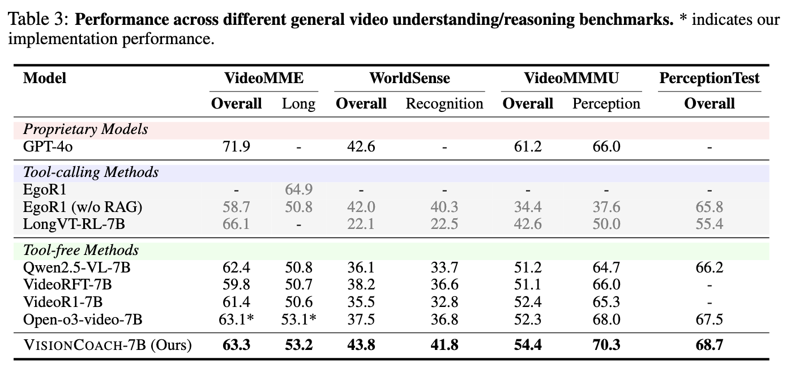
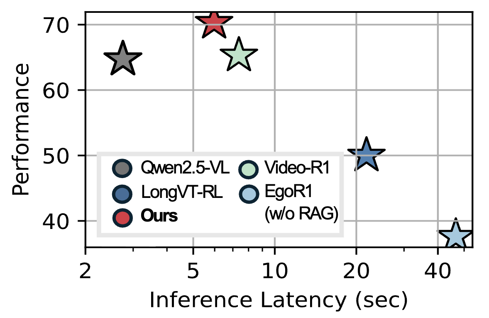
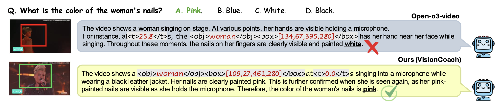

V-STAR (Spatio-Temporal Reasoning)

Table 1. Performance on the V-STAR benchmark. VisionCoach achieves strong spatio-temporal reasoning across overall dimensions.
General Video Understanding & Reasoning

Table 2. Performance across different general video understanding and reasoning benchmarks. * indicates our implementation performance.

Figure. Inference efficiency comparison. VisionCoach consistently outperforms both text-centric (Qwen2.5-VL, Video-R1) and tool-calling (EgoR1, LongVT-RL) baselines, while operating at substantially lower inference latency than external tool-based approaches.
Qualitative Examples

Qualitative examples. Representative success cases where VisionCoach produces grounded and detailed video reasoning responses, illustrating how training-time visual prompting guides the model toward accurate spatio-temporal evidence and reduces hallucinations.